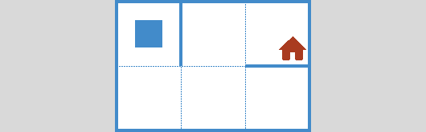

Главная Каталог задач First steps intro6 intro6 – First steps #6 Обстановки  Обстановка 1 Пример на Python from robot import * task("intro6") ← Предыдущая задача: intro5 Следующая задача: intro7 → Все задачи темы · Открыть полный каталог задач